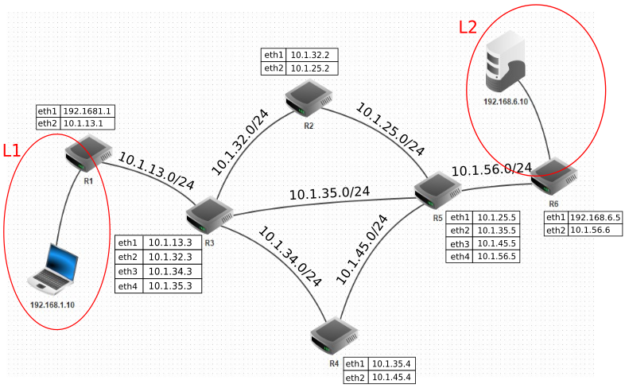

Réseau et adressage IP#
Couches réseau et protocoles#
La communication entre machines aujourd’hui se réalise grâce à différents éléments physiques et protocoles de communication. On les catégorise en 4 couches différentes.
La couche physique s’appuie sur des interfaces réseau qui sont identifiables de manière unique dans un réseau. Comment une interface réseau est-elle identifiée de façon unique ?
La couche internet permet la communication de 2 machines appartenant à 2 réseaux différents. Quel est le protocole utilisé et comment cela se traduit-il sur les machines ?
La couche transport assure l’acheminement des données et vérifie que celles-ci sont complètement arrivées.
Citer 2 protocoles de la couche transport pour les échanges sur internet.
Comment procèdent ces protocoles pour assurer la transmission des données ?
La couche application initie un échange de données sur internet. Citer des applications qui initient et échangent des données sur internet.
Les différentes couches traversées par un paquet de données à envoyer sur internet sont complétées par chacune des couches : c’est l’encapsulation des données. Représenter par un schéma cette encapsulation.
Un réseau internet#
On va étudier un réseau avec le logiciel filius qui permet simuler des réseaux. Le réseau ci-dessous est à télécharger sur le moodle de l’ENT.
Le réseau L1 comprend 1 portable qui a pour adresse IP 192.168.1.10
Le réseau L2 comprend 1 serveur qui a pour adresse IP 192.168.6.10
{kind=link}
Comment s’appelle les appareils qui relient les réseaux L1 et L2 ?
Combien d’interfaces réseau contient le routeur R3 ? Donner l’adresse réseau de chacune des interfaces.
Compléter le schéma de réseau en indiquant toutes les adresses réseaux de chaque machine.
La commande ping ip de la machine distante permet de vérifier la connexion avec une autre machine du réseau. Tester cette commande entre le portable et le serveur.
La commande traceroute ip de la machine distante affiche le parcours entre deux machines et affiche les routeurs utilisés. Combien de routeurs sont traversés dans cette communication ? Lesquels ?
Ajouter un PC portable dans le réseau L1. Assurez-vous qu’il communique avec toutes les machines du réseau L1 et aussi avec le serveur du réseau L2.
Ajouter un câble entre les routeurs R3 et R5 en donnant des adresses valides.
Quelle est la nouvelle route pour atteindre le serveur depuis un PC du réseau L1 ? En combien de sauts ?
Table de routage#
Les routeurs sont des appareils munis de plusieurs interfaces réseaux qui permettent aux routeurs de communiquer entre eux et d’acheminer les paquets de données. Les interfaces sont désignées par leur nom ou par leur adresse IP.
Une passerelle est un routeur ou une interface du routeur qui permet d’accéder au réseau de destination.
Sur la figure ci-dessous, les réseaux L1 et L2 sont reliés par différents routeurs.
{kind=link}
Chaque routeur dispose d’une table de routage qui contient les différents réseaux auxquels ils peut accéder, les passerelles à utiliser pour y accéder et les interfaces réseaux à utiliser.
destination |
passerelle |
interface |
IP destination / masque |
routeur ou IP |
carte réseau ou IP |
Au démarrage du réseau, après la mise sous tension, les tables de routage sont vides et chaque routeur commence par identifier ses voisins immédiats et complète sa table.
Après un certain temps, les routeurs échangent leurs informations et les tables se stabilisent.
Au démarrage, la table de routage du routeur R1 est vide. Compléter sa table avec ses voisins immédiats.
destination
passerelle
interface
Au démarrage, la table de routage du routeur R3 est vide aussi. Compléter sa table avec ses voisins immédiats.
destination
passerelle
interface
Les routeurs R1 et R3 échangent leurs tables. Compléter la table de routage du routeur R1 avec les nouvelles informations.
destination
passerelle
interface
Après de multiples échanges entre les routeurs, les tables de routage se stabilisent. Compléter la table de routage du routeur R1 une fois stabilisée.
destination
passerelle
interface